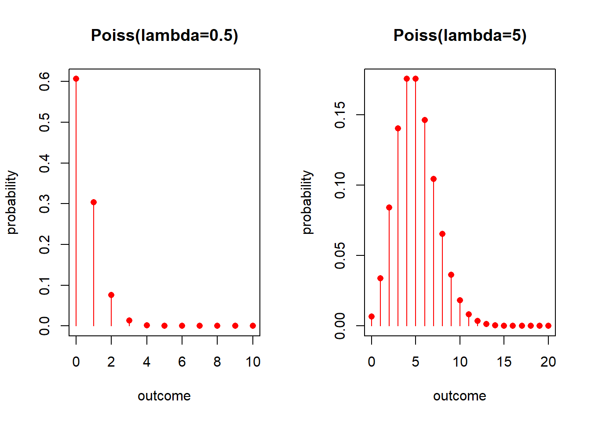
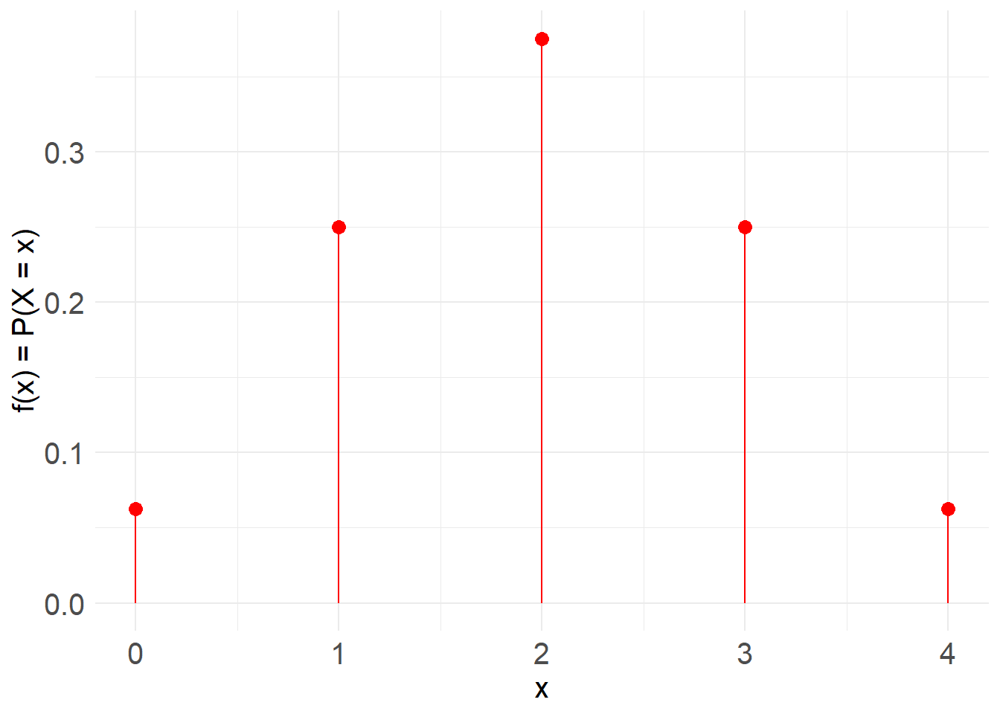
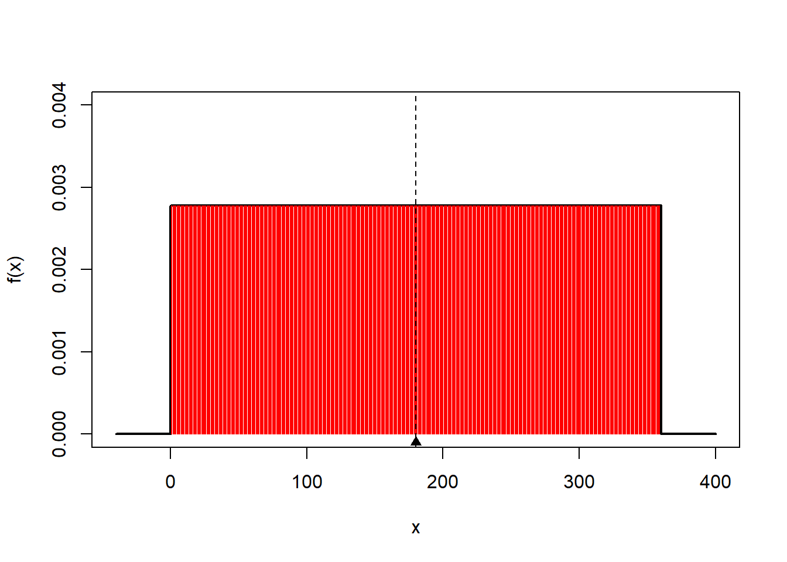

Chapter 8 Poisson and Exponential Models
8.1 Objective
In this chapter we will see two tightly related probability models: the Poisson and the exponential models.
The Poisson model is for discrete random variables while the exponential function is continuous random variables. They are closely related. We will see that from the same random experiment we may ask different questions that will lead to either one or the other model.
8.2 Discrete probability models
In the previous chapter we built complex models from simple ones. At each stage, we introduced some novel concept:
Uniform: Classical interpretation of probability
\(\downarrow\)
Bernoulli: Introduction of the probability \(p\) as parameter (family of models)
\(\downarrow\)
Binomial: Introduction of the repetition of a random experiment (\(n\)-times Bernoulli trials)
\(\downarrow\)
Poisson: Repetition of random experiment within a continuous interval, having no control on when/where the Bernoulli trial occurs.
The last stage is the Poisson process that describes a the repetition of a random experiment with additional randomness at the time of repetition.
8.3 Poissson experiment
Imagine that we are observing events that depend on time or distance intervals.
for example:
- cars arriving at a traffic light
- getting messages on a mobile phone
- impurities occurring at random in a copper wire
Suppose that the events are outcomes of independent Bernoulli trials each appearing randomly on a continuous interval, and we want to count them.
What is the probability of observing \(X\) events in an interval’s unit (time or distance)?
Example (Impurities in a wire):
Imagine that some impurities deposit randomly along a copper wire. You want to count the number of impurities (\(X\)) in one given centimeter of the wire.
Consider that you know that on average there are \(10\) impurities per centimeter \(\lambda=10/cm\).
What is the probability of observing \(X=5\) impurities in one particular wire specimen of one centimeter?
8.4 Poisson probability mass function
To calculate the probability mass function \(f(x)=P(X=x)\) of the previous example we divide the centimeter into micrometers (\(0.0001cm\)).
Micrometers are small enough so
either there is or there is not an impurity in each micrometer
each micrometer can be then be considered a Bernoulli trial

From the Binomial to the Poisson probability function
The probability of observing \(X\) impurities in \(n=10,000\mu\) (1cm) approximately follows a binomial distribution
\[f(x) \sim \binom n x p^x(1-p)^{n-x}\]
where \(p\) is the probability of finding an impurity in a micrometer.
Since the expected value of a Binomial variable is: \(E(X)=np\). This is the average number of impurities per 1cm or \(\lambda=np\) which we know, and consider that it is a property of the material. Therefore, substitute \(p=\lambda/n\)
\[f(x) \sim \binom n x \big(\frac{\lambda}{n}\big)^x(1-\frac{\lambda}{n})^{n-x}\]
Since, there could still be two impurities in a micrometer, we need to increase the partition of the wire and \(n \rightarrow \infty\).
Then in the limit:
\[f(x)= \frac{e^{-\lambda}\lambda^x}{x!}\]
\(\lambda\) is constant. It is the density of impurities per centimeter, a physical property of the system. \(\lambda\) is therefore the parameter of the probability model.
Derivation details:
For \(f(x) \sim \binom n x \big(\frac{\lambda}{n}\big)^x(1-\frac{\lambda}{n})^{n-x}\)
in the limit (\(n \rightarrow \infty\))
- \(\frac{1}{n^x}\binom n x =\frac{1}{n^x}\frac{n!}{x! (n-x)!}=\frac{(n-x)!(n-x+1)...(n-1)n}{n^x x! (n-x)!}=\frac{n(n-1)..(n-x+1)}{n^x x!} \rightarrow \frac{1}{x!}\)
- \((1-\frac{\lambda}{n})^{n} \rightarrow e^{-\lambda}\) (definition of exponential)
- \((1-\frac{\lambda}{n})^{-x} \rightarrow 1\)
Putting everything together then:
\(f(x)= \frac{e^{-\lambda}\lambda^x}{x!}\)
Definition
Given
- an interval in the real numbers
- events occur at random in the interval
- the average number of events on the interval is known (\(\lambda\))
- if one can find a small regular partition of the interval such that each of them can be considered a Bernoulli trial.
Then the random variable \(X\) that counts events across the interval is a Poisson variable with probability mass function
\[f(x)= \frac{e^{-\lambda}\lambda^x}{x!}, \lambda>0\]
which we write as
\[X \rightarrow Poiss(\lambda)\]
Properties: When \(X\) follows a Poisson model, it has
- mean \[E(X)= \lambda\]
- and variance \[V(X)= \lambda\]
Examples
- What is the probability of receiving four emails in an hour, when the average number of emails in an hour is \(1\)?
We have that the random variable that counts emails follows a Poisson model \[X \rightarrow Poiss(\lambda)\] with \(\lambda=1\). That is; it has probability mass function
\[f(x)= \frac{e^{-1}1^x}{x!}\] Therefore, the probability that the variable takes value 4 is \(P(X=4)\) is
\[f(4; \lambda=1)= \frac{e^{-1}1^4}{4!}=0.01532831\]
in Python poisson.pmf(4,1)
- What is the probability of receiving 4 emails in three hours, when the average number of emails in an hour is \(1\)?
The unit in which we do the counts has changed from 1 hour to 2 hours, so we have to re-scale \(\lambda\). If before the average number of emails in one hour was \(\lambda=1\), the average number of emails in three hours is now 3: \(\lambda_{3h}=3\lambda_{1h}=3*1=3\)
We have that the variable is Poisson: \(X \rightarrow Poiss(\lambda_{3h})\) with \(\lambda_{3h}=3\) and its probability mass function is:
\[f(x)= \frac{e^{-3}3^x}{x!}\] Therefore the probability that the variable takes value 4 is \(P(X=4)\):
\[f(4; \lambda=3)= \frac{e^{-3}3^4}{4!}=0.1680314\]
in Python poisson.pmf(4,3)
- What is the probability of counting at least \(10\) cars arriving at a toll booth in one minute, when the average number of cars arriving at a toll booth in one minute is \(5\);
We have that the variable is Poisson: \(X \rightarrow Poiss(\lambda)\) with \(\lambda=5\) and its probability mass function is:
\[f(x)= \frac{e^{-5}5^x}{x!}\] and then, we want to compute
\(P(X\geq 10)=1-P(X < 10)=1-P(X \leq 9)=1-F(9; \lambda=5)=0.03182806\)
where we use the probability distribution \(F(x,\lambda)\) of the Poisson model.
In Python 1-poisson.cdf(9,5)
Let’s look at some probability mass functions in the family of parametric Poisson models:

8.5 Continuous probability models
Continuous probability models are probability density functions \(f(x)\) of a continuous random variables that we believe describe real random experiments.
A probability density function \(f(x)\)
- is positive
\[f(x) \geq 0\]
- allows us to compute probabilities using the area under the curve
\[P(a\leq X \leq b)=\int_{a}^{b} f(x) dx\]
- is such that the probability of anything is \(1\)
\[\int_{-\infty}^{\infty} f(x) dx = 1\]
8.6 Exponential process
Let’s go back to a Poisson process defined by probability
\[f(k)=\frac{e^{-\lambda}\lambda^k}{k!}, \lambda>0\]
for the number of events (\(k\)) in an interval.
Let us now consider that we are interested in the length/time we should wait for the first event to occur.
We can ask about the probability that the first event occurs after length/time \(X\).
Therefore, since \(X\) is a continuous random variable, we are looking for its probability density function \(f(x)\).
8.7 Exponential probability density
The probability of \(0\) counts if an interval has unit \(x\) is
\[f(0|x)=\frac{e^{-x\lambda}x\lambda^0}{0!}\]
(look at example 2 above, where we re-escale the units of \(\lambda\)) or
\[f(0|x)=e^{-x\lambda}\]
We can treat this as the conditional probability of \(0\) events given a distance \(x\): \(f(K=0|X=x)\) and apply the Bayes theorem to reverse it:
\[f(x|0)=C f(0|x)=C e^{-x\lambda}\]
\(C\) is a constant that collects the marginal divided by total probability rule. So we can calculate the probability of observing a distance \(x\) that has \(0\) counts. This is the probability that we measure a length/time \(x\) until the first event. Since we can cut the wire at any point and measure the distance until the next event, if we decide to cut at one event, this probability is also for the distance between any two consecutive events.
Definition
In a Poisson process with parameter \(\lambda\) the probability of measuring a length/time \(X\) between any two consecutive events is given by the probability density
\[f(x)= C e^{-x\lambda}\]
where \(C\) is a constant that ensures \(\int_{-\infty}^{\infty} f(x) dx =1\). By integration we find \(C=\lambda\), and therefore
\[f(x)=\lambda e^{-\lambda x}, x\geq 0\]
\(\lambda\) is the paramenter of the model also known as a decay rate.
Properties:
When $X follows an exponential model $\(X \rightarrow Exp(\lambda)\) then
- It has mean
\[E(X)=\frac{1}{\lambda}\]
- and variance \[V(Y)=\frac{1}{\lambda^2}\]
Let’s look at a couple of the probability densities in the exponential family

8.8 Exponential Distribution
Consider the following questions:
- In a Poisson process ¿What is the probability of observing an interval smaller than size \(a\) until the first event?
We have shown that if we are counting Poisson events \(K \rightarrow Poiss(\lambda)\) then the distance until the first interval follows an exponential model \(X \rightarrow Exp(\lambda)\). Now, remember that the probability of observing and interval smaller than \(a\) is computed with the probability distribution \(F(a)=P(X \leq a)\)
\[F(a)=\lambda \int_\infty^a e^{-x\lambda}dx=1-e^{-a\lambda}\] 2) In a Poisson process ¿What is the probability of observing an interval larger than size \(a\) until the first event?
Using the probability distribution this can be computed as:
\[P(X > a)=1- P(X \leq a)= 1- F(a) = e^{-a\lambda}\]
Let’s look at a couple of exponential distributions from the exponential family

The median \(x_m\) is such that \(F(x_m)=0.5\). That is \(x_m=\frac{\log(2)}{\lambda}\).
Examples
- What is the probability that we have to wait for a bus for more than \(1\) hour when on average there are two buses per hour?
\(X\) is the time for the first Poisson event (bus arrival) and therefore \(X \rightarrow Exp(\lambda=1)\). Threfore, we can compute
\[P(X > 1)=1-P(X \le 1) = 1-F(1,\lambda=2)=0.1353353\]
Where \(F(1)\) is the esponential distribution function above and in Python 1-expon.cdf(1,0,1/2). Note than Pyhton uses \(1/\lambda\) as argument (the half life).
- What is the probability of having to wait less than \(2\) seconds to detect one particle when the radioactive decay rate is \(2\) particles each second; \(F(2,\lambda=2)\)
\[P(X \le 2)=F(2,\lambda=2)=0.9816844\]
in Python expon.cdf(2,0,1/2)
8.9 Questions
1) During WWII in London, the expected number of bombs that hit an area of \(3km^2\) was \(0.92\). The probability that, in one day, one area received two bombs was
\(\qquad\)a:1-poisson.cdf(x=2, lambda=0.92);
\(\qquad\)b:poisson.cdf(x=2, lambda=0.92); \(\qquad\)c:1-poisson.pmf(x=2, lambda=0.92); \(\qquad\)d:poisson.pmf(x=2, lambda=0.92)
2) The probability that a passenger has to wait less than 20 minutes until the next bus arrives at her stop is better described by
\(\qquad\)a: A poisson model on the number of buses per 20 minutes;
\(\qquad\)b: An exponential distribution at 20 minutes with a given expectation of buses per minute;
\(\qquad\)c: A binomial model that counts the number of buses per 20 minutes
\(\qquad\)d: A normal distribution with an average of buses per 20 minutes and a given standard deviation;
3) From the exponential probability distribution in the figure below, what is the most likely value of the median?
\(\qquad\)a: \(2\); \(\qquad\)b: \(3\); \(\qquad\)c: \(4\); \(\qquad\)d: \(5\)

8.10 Exercises
8.10.0.1 Exercise 1
The average number of phone calls per hour coming into the switchboard of a company is \(150\). Find the probability that during one particular minute there will be
- 0 phone calls (R:0.082)
- 1 phone call (R:0.205)
- 4 or fewer calls (R:0.891)
- more than 6 phone calls (R:0.0141)
8.10.0.2 Exercise 2
The average number of radioactive particles hitting a Geiger counter in a nuclear energy plant under control is \(2.3\) per minute.
What is the probability of counting exactly \(2\) particles in a minute? (R:0.265)
What is the probability of detecting exactly \(10\) particles in \(5\) minutes? (R:0.112)
What is the probability of at least one count in two minutes? (R:0.9899)
What is the probability of having to wait less than \(1\) second to detect a radioactive particle, after we switch on the detector? (R:0.037)
We suspect that a nuclear plant has a radioactive leak if we wait less than \(1\) second to detect a radioactive particle, after we switch on the detector. What is the probability that when we visit in \(5\) plants that are under control, we suspect that at least one has a leak? (R:0.1744).